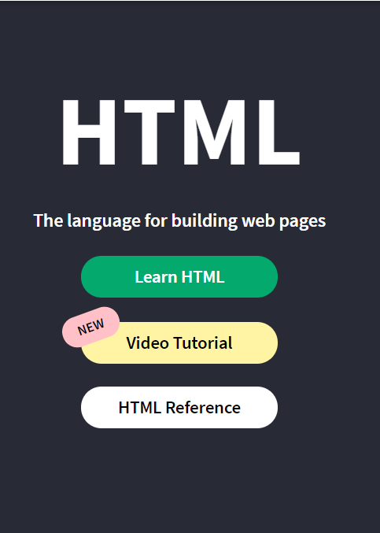
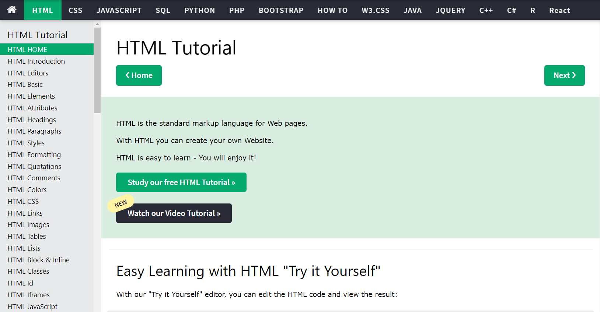

Here we see best places to learn basic HTML online and its environment.
Whenever you search any code or any part of your coding exercise you might came across to this site. W3Schools is a platform that teach all technical languages and programs at free of cost. If we talk about HTML there are 3 categories are available to learn HTML.
If you press Learn HTML it refers to this page where you can start your journey to learn HTML. and also W3Schools is my personal favorite website for learning any programming language.
here in side bar you have given all topics that they cover in this course so, it becomes easy to find any topics that you want to learn. so, I suggest to start your journey with this web site.
HTML Development can be done in either TEXT editors or IDEs. If you have windows OS then you can write your code in Notepad and run it on in your any browser. it gives you output.
Alternatively you can download advanced editors like Sublime Text or Notepad++. You can search for them in your search engine and go to the download page.
When you use a Text editor, just create a new file, and add your HTML Code.
Once added, save the file to your favorite location. Make sure to save with extension ".html".
You are done! Go to the location where you saved the file and double click the file to see the HTML Output.
There are lots off IDEs that can used for HTML editing. but some popular IDEs are :
In this IDEs I prefer Visual Studio for all programming languages like HTML,CSS,JAVA,JS etc.
We will see uses of visual studio code in next blog.